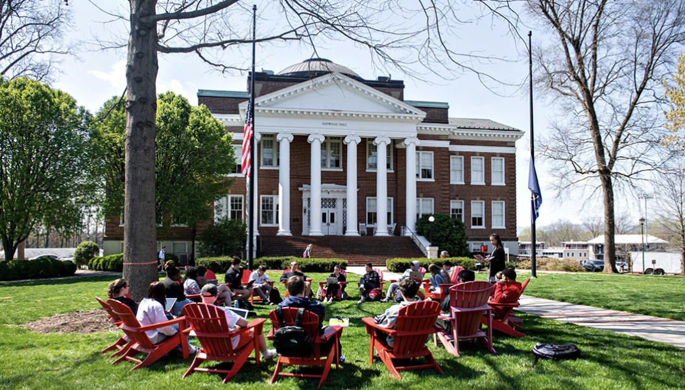

Things I Wished I Knew Before Coming to Campus
Here are some tips and information that would have been helpful to know before arriving:
- A lanyard for your student ID card is highly recommended since you need it to access many of the buildings on campus.
- The campus store on the second floor of Drysdale Student Center sells toothpaste, deodorant, and other essentials.
- The dining hall may be open for a long time, but they will stop serving more food about an hour before closing so it would be best to plan out when to eat in advance.
- The library has a computer lab that can be accessed even when the library is closed.
